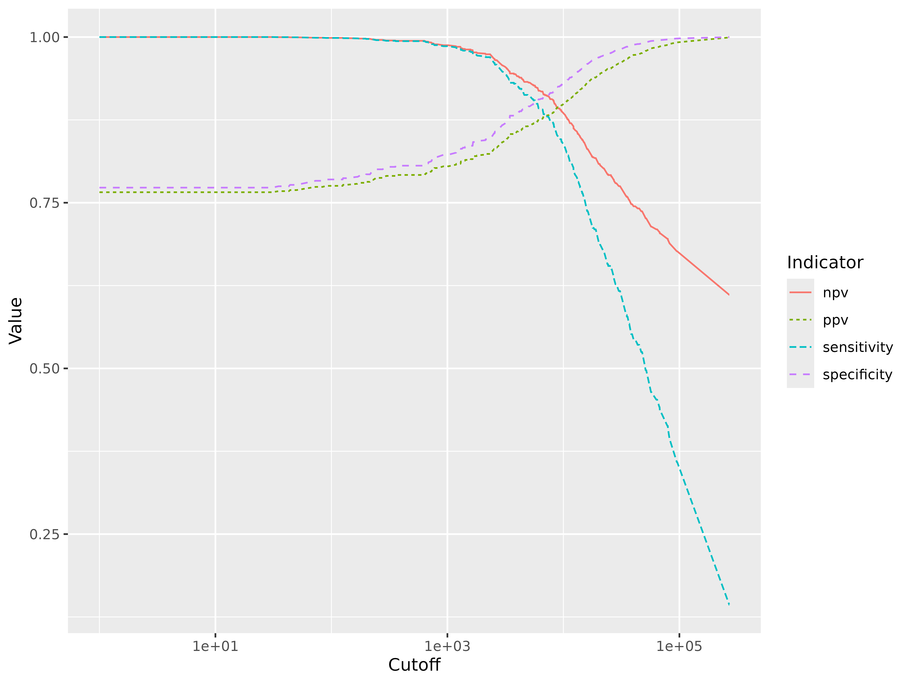
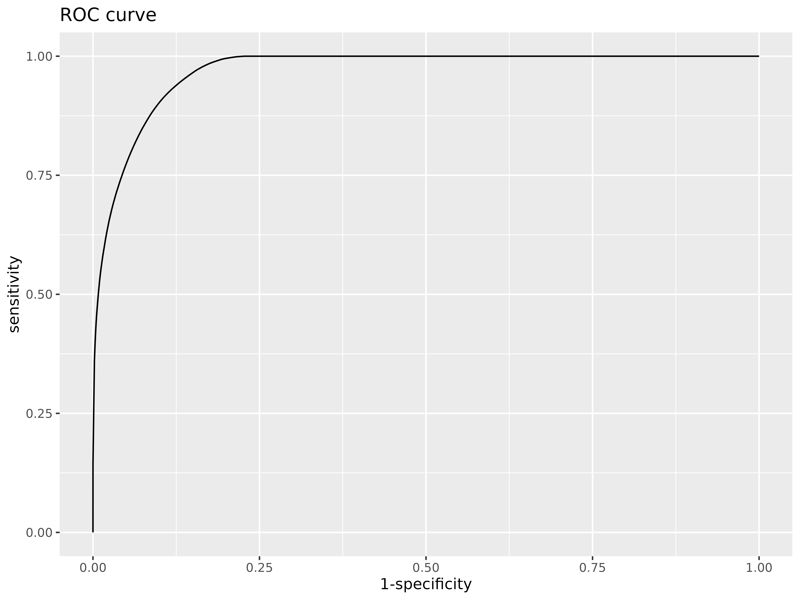

vignettes/af_logit_exponential.Rmd
af_logit_exponential.RmdBy John Aponte and Orvalho Augusto.
In malaria endemic areas, asymptomatic carriage of malaria parasites occurs frequently and the detection of malaria parasites in blood films from a febrile individual does not necessarily indicate clinical malaria.
A case definition for symptomatic malaria that is used widely in endemic areas requires the presence of fever or history of fever together with a parasite density above a specific cutoff. If the parasite density is equal or higher than the cutoff point, the fever is considered due to malaria.
How to estimate what is the sensitivity and specificity of the cutoff point in the classification of the fever, without knowing what is the true value of the fevers due to malaria?
Using the attributable fraction, one can estimate the expected number of true cases due to malaria and with the positive predictive value associated with a given cutoff point, we can estimate the expected number of true cases among the fever cases that have a parasite density higher or equal than the selected cutoff point. Based on this values, the rest of the 2x2 table can be completed and the sensitivity, specificity and negative predictive value.
In order to estimate the attributable fraction and the positive
predictive value, we follow the method proposed by Smith et al. (1)
fitting a logistic exponential model.
Here it is presented how to do it with the afdx package for
the R-software.
The data used in this example (malaria_df1) is a simulated data set as seen frequently in malaria cross-sectionals where two main outcomes are measured, the presence of fever or history of fever (fever column) and the measured parasite density in parasites per (density column).
#>
#> Attaching package: 'dplyr'
#> The following objects are masked from 'package:stats':
#>
#> filter, lag
#> The following objects are masked from 'package:base':
#>
#> intersect, setdiff, setequal, union
#>
#> Attaching package: 'magrittr'
#> The following object is masked from 'package:tidyr':
#>
#> extract
#>
#> Attaching package: 'kableExtra'
#> The following object is masked from 'package:dplyr':
#>
#> group_rows| fever | density |
|---|---|
| 1 | 475896 |
| 1 | 12008 |
| 0 | 1392 |
| 0 | 1664 |
| 0 | 0 |
| 1 | 0 |
In this simulation, there are 2000 observations, from which 785 have fever or history of fever and 744 have a density of malaria greater than 0. A total of 437 have both fever and a malaria density higher than 0.
| k (category lower limit) | m (no fever) | n (fever) |
|---|---|---|
| 0 | 908 | 348 |
| 1 | 12 | 6 |
| 100 | 8 | 4 |
| 200 | 19 | 7 |
| 400 | 37 | 8 |
| 800 | 47 | 11 |
| 1600 | 43 | 28 |
| 3200 | 41 | 33 |
| 6400 | 42 | 51 |
| 12800 | 23 | 59 |
| 25600 | 24 | 60 |
| 51200 | 10 | 54 |
| 102400 | 0 | 50 |
| 204800 | 1 | 66 |
Smith et al (1) investigate different models to describe the risk of fever due to malaria. Given that the association is not linear, the best model found was a logit exponential model:
where is the probability of fever for the observation and is the parasite density for observation .
The attributable fraction is estimated as:
where is the number of fever cases, and
If a case of malaria is defined as a case of fever with a malaria density equal greater than a cutoff , is the number of fever cases that accomplish that definition and the proportion of these diagnosis cases that are attributable to malaria is estimated by
where is and indicator with value 1 if that fever case satisfies the malaria case definition and 0 otherwise
Sensitivity for the cuttof is defined then as: ,
Specificity is defined as:
Predictive positive value as:
Negative predicted value as:
For example, if 500 is selected as cutoff point, there are 420 cases of fever with density greater or equal than 500 from a total of 785 fevers. From the model, the estimated attributable fraction is 42.63% and the proportion attributed to malaria for fevers equal or greater than 500 is 79.19%
The total number of true malaria cases is estimated as 334.7 and the number of true malaria cases in those that accomplish the definition as = 332.6. The full 2x2 table can be filled and the corresponding sensitivity, specificity and predictive values calculated.
| True.Malaria | Other.aetiology | All | |
|---|---|---|---|
| Malaria case (fever and density > 500) | 332.6 | 87.4 | 420 |
| No case | 2.1 | 362.9 | 365 |
| Total | 334.7 | 365.0 | 785 |
The adfx provide functions that facilitate the fitting
of the logit exponential model and to estimate the sensitivity,
specificity, positive and negative predictive values for different
cutoff points.
fit <- logitexp(malaria_df1$fever, malaria_df1$density)
fit
#> coef se lb ub z p.val
#> alpha -0.99141016 0.061163803 -1.111289009 -0.87153131 -16.209099 4.348958e-59
#> beta 0.01057825 0.006182814 -0.001539846 0.02269634 1.710911 8.709749e-02
#> tau 0.50528545 0.054303566 0.398852411 0.61171848 9.304830 1.342070e-20
#> = = = = = = = = = =
#> AF: 0.4263406
senspec(fit, c(1,100,500,1000,2000,4000,8000,16000, 32000,54000,100000))
#> cutoff sensitivity specificity ppv npv
#> [1,] 1 1.0000000 0.7727793 0.7658522 1.0000000
#> [2,] 100 0.9986640 0.7851102 0.7754763 0.9987369
#> [3,] 500 0.9937948 0.8059184 0.7919063 0.9943103
#> [4,] 1000 0.9861357 0.8224325 0.8049691 0.9876265
#> [5,] 2000 0.9720090 0.8430224 0.8214885 0.9759178
#> [6,] 4000 0.9250541 0.8858479 0.8576031 0.9408427
#> [7,] 8000 0.8707224 0.9165290 0.8857481 0.9051178
#> [8,] 16000 0.7372786 0.9594746 0.9311339 0.8309098
#> [9,] 32000 0.5936829 0.9837722 0.9645255 0.7651379
#> [10,] 54000 0.4863330 0.9928155 0.9805100 0.7222734
#> [11,] 100000 0.3470469 0.9981097 0.9927245 0.6728613The function make_cutoffs() find the densities where
there is change in the number of positives and can be used to estimate
the characteristics of all cutoff points
cutoffs <- make_cutoffs(malaria_df1$fever, malaria_df1$density)
dxp <- senspec(fit, cutoffs[-1])
dxp %>%
data.frame(.) %>%
pivot_longer(-cutoff, names_to = "Indicator",values_to = "Value") %>%
ggplot(aes(x = cutoff, y = Value, color = Indicator, linetype = Indicator)) +
geom_line() +
scale_x_log10("Cutoff")
The receiver operative curve can be estimated from the sensitivity and specificity values
rocdf <-dxp %>%
data.frame(.) %>%
## add the corners
bind_rows(
data.frame(
sensitivity= c(1,0),
specificity= c(0,1)
)
) %>%
# generate the 1-specificity
mutate(`1-specificity` = 1 - specificity)
# make the graph
ggplot(rocdf, aes(x = `1-specificity`, y = sensitivity)) +
geom_line()+
ggtitle("ROC curve")